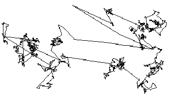

| First, we present the basic idea of Levy flights, and a visual example. |
| The distribution of jumps of Levy flights is different from that of Brownain or fractional Brownian motion. |
| Here is a method for simulating Levy flights. |
| Here are some examples of Levy flights in nature. |
Return to Random Fractals.